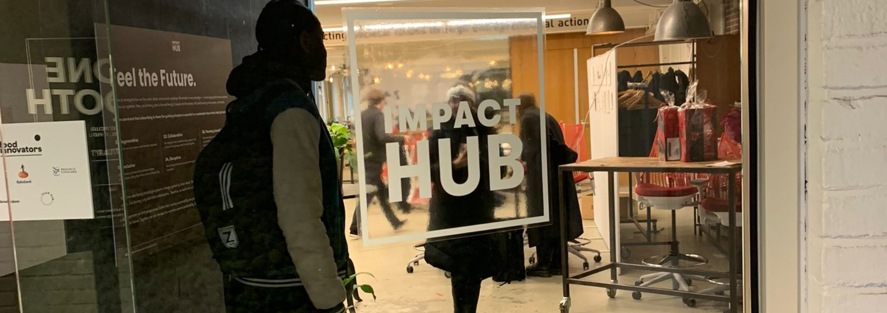

over hun
wie is impact hub
Impact Hub is wereldwijd een netwerk van co-werkruimtes en gemeenschappen die sociale en ecologische impact bevorderen. Opgericht in 2005 in Londen, biedt het meer dan 100 steden een fysieke werkplek en een platform voor sociale innovatie. Ze organiseren evenementen en programma's gericht op duurzaamheid en sociale rechtvaardigheid. Als een hub voor creativiteit en samenwerking ondersteunt Impact Hub ondernemers bij het ontwikkelen van positieve initiatieven. Het netwerk brengt impactgerichte individuen en organisaties samen, fungeert als katalysator voor verandering en biedt de nodige middelen en ondersteuning voor een betere wereld.
waarom is impact hub zo duurzaam
Impact Hub is duurzaam omdat het een gemeenschap van ondernemers en professionals samenbrengt die zich inzetten voor positieve verandering. De focus ligt op het creëren van innovatieve oplossingen voor maatschappelijke en milieuproblemen. Het stimuleert samenwerking en kennisdeling, waardoor duurzame projecten kunnen gedijen. Bovendien biedt het een inspirerende omgeving die sociale ondernemingen ondersteunt en duurzaamheid bevordert.
impact hub netwerk
Impact Hub heeft een indrukwekkend wereldwijd netwerk van hubs verspreid over verschillende steden en landen. Naast hun aanwezigheid in Amsterdam zijn er Impact Hub-locaties over de hele wereld. Dit internationale netwerk geef ondernemers de mogelijkheid om wereldwijde connecties te leggen, kennis uit te wisselen en samen te werken aan duurzame oplossingen. De grote diversiteit van locaties draagt bij aan een fijne mix van perspectieven en benaderingen, waardoor het ecosysteem van Impact Hub bloeit op zowel lokale als mondiale schaal.